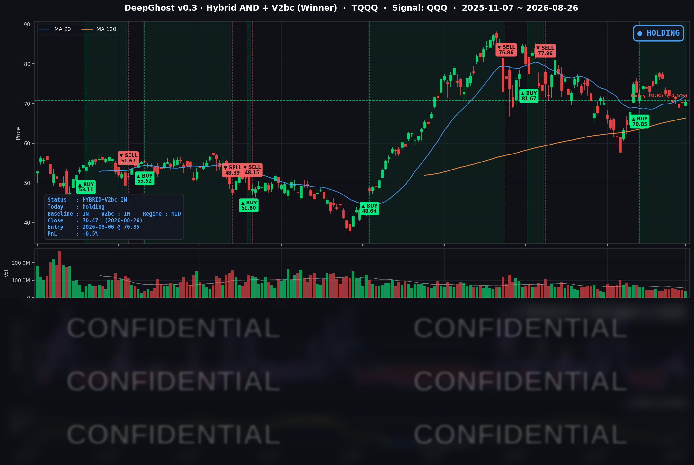

👻 매일 시그널과 히스토리를 홈페이지에서 한눈에 → www.ghostai.co.kr
엔비디아 실적 발표 후 나스닥이 1% 상승하고 있습니다. 이 훈풍이 9월 지속되길 기대해 봅니다.
📊 오늘의 매매 신호
| 항목 | 내용 |
|---|---|
| 오늘 할 일 | ✅ 아무것도 안 해도 됩니다 |
| 포지션 상태 | 📈 TQQQ 보유 중 (IN POSITION) |
| 매수 진입일 | 2026-08-06 (15거래일째) |
| 진입가 → 현재가 | $70.85 → $70.47 |
| 현재 포지션 수익 | -0.54% |
TQQQ 시그널 — IN POSITION
현재 상태: 매수 포지션 유지 중 | 이번 포지션 수익률 -0.54%

전략의 TQQQ 트랙은 8월 6일 진입 자리를 15거래일째 유지하고 있습니다. 오늘 TQQQ가 소폭(+0.28%) 오르면서 평가손익은 -0.82% → -0.54%로 개선됐습니다. 진입가 $70.85까지 남은 거리는 이제 +0.54%입니다.
오늘 미국 시장 — 시황 요약
지수 마감
| 지수 | 종가 | 등락률 |
|---|---|---|
| S&P 500 | 7,675.70 | -0.02% |
| 나스닥 종합 | 26,130.20 | -0.08% |
| 다우존스 | 53,463.88 | -0.21% |
| 러셀 2000 | 3,005.90 | -0.14% |
| QQQ (나스닥100) | 711.37 | +0.09% |
네 지수 모두 ±0.2% 이내에서 사실상 보합 마감했습니다. 그런데 개별 종목을 전수로 보면 표정이 다릅니다. 상승 283 : 하락 217로 오르는 종목이 더 많았고, 종목 평균(동일가중) 등락률은 +0.20%였습니다. 지수는 반도체·검색광고 대형주(엔비디아 -1.59%, 알파벳 -1.43%) 몇 종목의 실적 대기 약세에 눌렸을 뿐, 나머지 다수 종목은 완만하게 올랐습니다. 지수만 보면 조용한 하루였지만, 시장 내부는 오히려 건강했습니다.
국채 금리 동향
| 만기 | 수익률 | 전일 대비 |
|---|---|---|
| 3개월 | 3.690% | -1.5bp |
| 5년 | 4.381% | +3.0bp |
| 10년 | 4.664% | +2.5bp |
| 30년 | 5.186% | +1.2bp |
장단기 스프레드(10년-3개월)는 93.4bp → 97.4bp로 다시 벌어졌습니다. 곡선은 여전히 정상적인 우상향이며 역전은 없습니다.
오늘 금리가 오른 건 헤드라인 물가 서프라이즈 때문입니다. 3개월물은 거의 그대로인데 5년물·10년물만 소폭 올라, 단기 정책금리 기대보다는 중장기 인플레이션 우려가 살짝 반영된 모양입니다. 다만 상승폭이 1~3bp 수준으로 작아 주가에 미친 영향은 제한적이었습니다.
연준 발언 & 금리 패스
오늘도 예정된 연준 인사의 공개 발언은 없었습니다. 잭슨홀 심포지엄 직전의 공백이 이틀째 이어지고 있습니다. 오늘 금리 변화는 연준 발언이 아니라 PCE·GDP 지표 자체가 만든 것입니다.
8월 28일(금) 오전 10시(현지)에는 케빈 워시 의장의 잭슨홀 첫 기조연설이 예정돼 있습니다. 취임 후 첫 무대인 만큼 평범한 발언도 더 무겁게 받아들여질 거라는 시장 코멘트가 나옵니다. 오늘 물가 서프라이즈로 금리 경로에 대한 불확실성이 남은 채로 이 연설을 맞이하게 됐습니다. 같은 날 낮 12시 45분에는 보먼 감독 부의장의 대담도 예정돼 있습니다.
오늘의 핵심 이슈
1. PCE·GDP 더블 헤더 — 헤드라인만 매파, 나머지는 예상대로. 헤드라인 물가(PCE)는 전년비 +3.7%로 예상을 소폭 웃돌았지만, 연준이 더 중시하는 근원 물가는 +3.3%로 예상에 정확히 부합했고 넉 달째 같은 수준에 머물러 있습니다. GDP 2분기 확정치도 +1.5%로 속보치 그대로였습니다. 실질 소비지출은 사실상 정체됐고, 9월 금리 인하 기대는 40%에서 38%로 소폭 낮아졌습니다.
2. 엔비디아 — 실적/가이던스 기대치 부합. 매출·이익·3분기 가이던스 모두 시장 예상을 넘어선 "비트 앤 레이즈". 내일 데이터로 시장이 어떻게 반응하는지 실제 확인이 필요합니다.
3. 메타는 뚜렷한 재료, 테슬라는 무촉매 동반 하락. 메타는 대형 소송 합의와 신규 AI 서비스 발표로 상승 재료가 분명했던 반면, 테슬라는 특별한 자체 뉴스 없이 반도체·AI 관련주 전반의 실적 대기 분위기에 동반 하락했습니다.
변동성 & 투자심리
VIX는 15.21로 전일 대비 -1.55% 내리며 당일 저점에서 마감했습니다. 20일 평균(15.45)·60일 평균(16.94)을 모두 밑도는 낮은 수준입니다. 개별 종목 전수 기준 상승:하락은 283:217로 우위였고, 공포탐욕지수는 직전 확정치(8/25) 기준 55 안팎으로 "탐욕" 영역에 머물러 있습니다. 표면적인 보합과 달리 시장 내부의 분위기는 나쁘지 않았습니다.
매크로 & 원자재
금(GLD)은 -1.58%, 원유(USO)는 +0.95%로 마감했습니다. 안전자산 수요가 하루 만에 한풀 꺾이고, 전날 급락했던 유가는 저가 매수로 완만히 되돌렸습니다. 코어 물가가 예상을 벗어나지 않았다는 오늘의 톤과 맞아떨어지는 조합입니다.
주요 종목 동향
| 종목 | 종가 | 등락률 | 비고 |
|---|---|---|---|
| NVDA | 209.66 | -1.59% | 정규장 마감 후 2분기 실적 발표. 매출·이익·3분기 가이던스 모두 예상치 상회. 일부 매체가 시간외 하락 조짐을 보도했으나 내일 데이터에서 확정 필요 |
| QCOM | 163.72 | +1.97% | 커버리지 내 최대 상승 |
| META | 576.14 | +1.07% | 29개 주 아동안전 소송 166.8억 달러 합의, 신규 AI 서비스 발표, 목표주가 상향 |
| AAPL | 313.45 | +1.15% | |
| MSFT | 496.37 | +0.95% | |
| INTC | 88.24 | +0.87% | |
| MU | 938.40 | +0.58% | |
| AMZN | 260.28 | -0.30% | |
| AVGO | 355.59 | -0.32% | |
| NFLX | 81.46 | -0.94% | |
| TSLA | 345.82 | -1.26% | 뚜렷한 자체 재료 없이 반도체·AI 관련주 조정에 동반 하락 |
| GOOGL | 342.00 | -1.43% | 커버리지 내 최대 하락, 대규모 설비투자 확대 발표에 성장 기대가 상쇄됨 |
다가오는 일정
- 8/27 (목) — 엔비디아 실적의 진짜 반응이 확정되는 날입니다.
- 8/28 (금) 오전 10시(현지) — 케빈 워시 의장의 취임 후 첫 잭슨홀 기조연설이 예정돼 있습니다.
Ghost.AI — Quantitative AI Investment
Model: DeepGhost v0.3 | Transformer-Based Deep Learning
Coverage: 13 tickers | Updated every trading day after US market close
⚠️ 본 자료는 정보 제공 목적으로만 작성되었으며 투자 권유가 아닙니다. 모든 투자의 책임은 투자자 본인에게 있습니다. 과거 성과가 미래 수익을 보장하지 않습니다.
[유의사항]
- 본 서비스는 불특정 다수를 대상으로 발행되는 단방향 정보 제공 서비스이며, 투자자 개인의 재산 상황·투자 목적·위험 선호도를 반영한 개별 투자 조언이 아닙니다.
- 고스트에이아이 주식회사는 고객과 쌍방향 의사소통(개별 상담, 맞춤형 자문 등)을 제공하지 않습니다.
- 본 콘텐츠는 투자 권유 또는 매매 주문의 청약·청약의 권유에 해당하지 않으며, 최종 투자 판단 및 그에 따른 손익의 책임은 전적으로 투자자 본인에게 있습니다.
고스트에이아이 주식회사